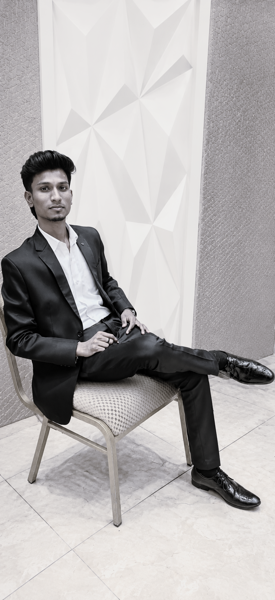

THE PERSON
behind the models.
AI/ML undergraduate focused on taking real problems through preprocessing, feature engineering, modelling, evaluation, explainability and deployment.

I am pursuing a B.Tech in Artificial Intelligence & Machine Learning at Manakula Vinayagar Institute of Technology, Puducherry. My portfolio is centered on hands-on AI/ML systems, with experience spanning anomaly detection, forecasting, customer segmentation, GenAI and explainability.
What shaped
my work.
B.Tech — Artificial Intelligence & Machine Learning
Manakula Vinayagar Institute of Technology, Puducherry · CGPA 8.26 up to 5th semester.
CORIZO · Machine Learning Intern
Hands-on ML training covering data preprocessing, feature engineering and model evaluation using Python, Scikit-learn, Pandas and NumPy, with guided projects in clustering and ensemble modelling.
BCG X · Data Science & GenAI Job Simulation
Analyzed datasets using Python and Excel and applied GenAI, prompt engineering and LLMs to consulting case problems; the resume reports a 20% improvement in data interpretation accuracy.
EDU TANTR · Full Stack Development Internship
A separate historical development experience. It is shown here as experience, while the portfolio identity remains AI/ML Engineer.